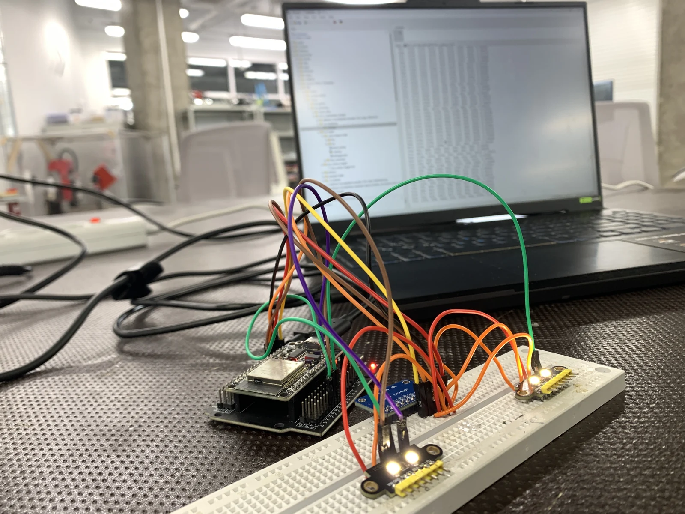
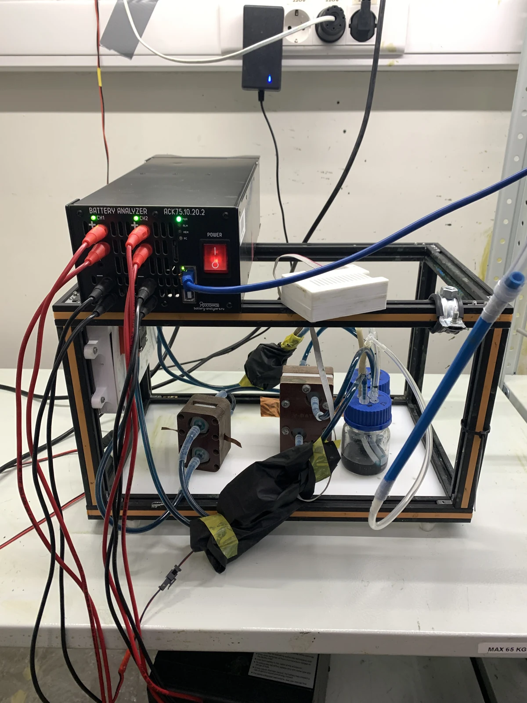
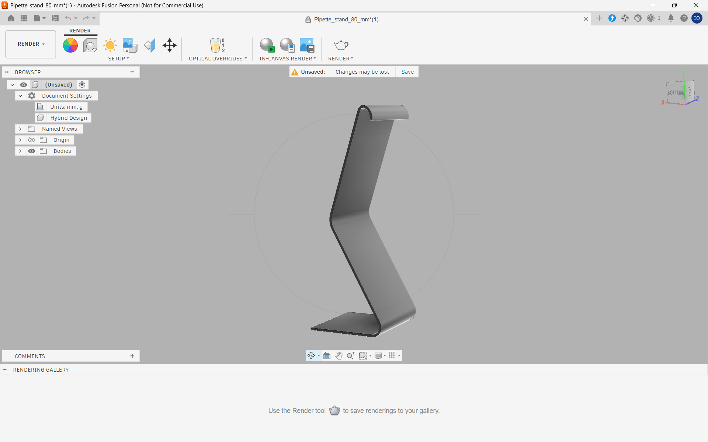
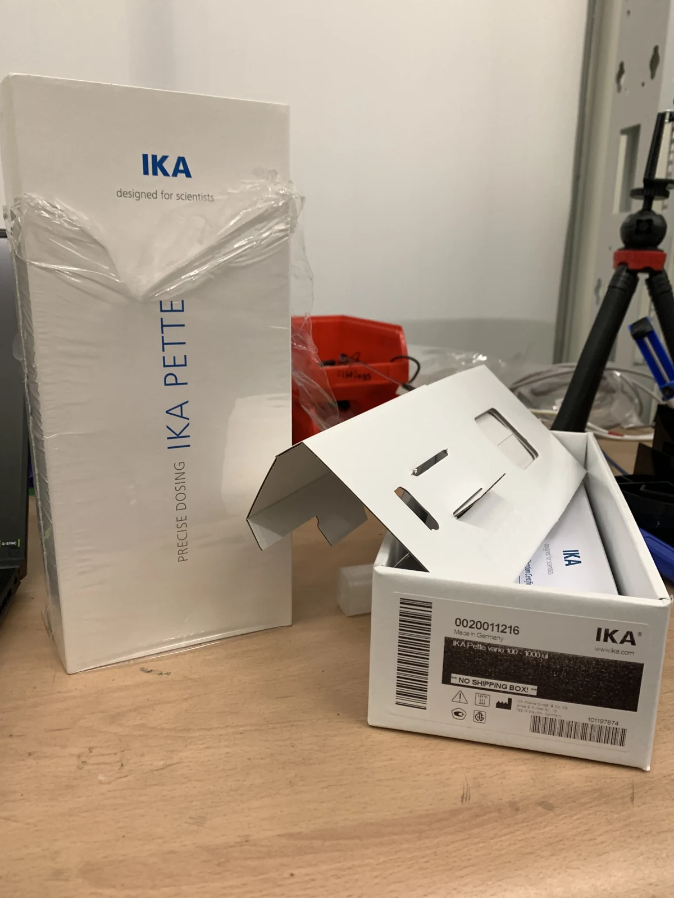

Research / MSc thesis
Understanding the battery
behind the voltage.
I work on digital twins and parameter identification for vanadium redox flow batteries. The question is not just whether a model fits, but what that fit tells us about the physical battery.
Latest from the bench · reader, printed stand & ten-cycle experiment ↓
Conceptual schematic; animation illustrates circulation and electron flow, not measured operation.

01 / The digital twin
A model that meets
the measurements.
In the first year of my MSc, I built a zero-dimensional flow-battery model in Simulink using the laboratory’s established physics. The model tracks electrolyte concentrations and stack voltage, can start from state of charge or measured voltage, and includes charge and discharge protection.
I fitted it to six polarisation curves and four laboratory charge–discharge cycles using a two-stage identification method adapted from the lab’s published work. A shared physical parameter set reproduced the four cycles with a mean voltage RMSE of 0.065 V in Simulink; area-specific resistance was retuned for each current. As an independent check, the fitted formal potential lands within 4 mV of the directly measured open-circuit voltage, and the fitted initial state of charge matches a Nernst estimate.
The next question was identifiability. Repeating the fit from different starting points showed that a good voltage fit does not uniquely determine every physical parameter. Formal potential, resistance, and concentration can compensate for one another.
Research repositoryScope: one five-cell stack and one experimental campaign. The voltage error describes the fitted laboratory cycles; it is not a general battery-accuracy guarantee.

Model structure


02 / Cell design
From CAD
to the cell.
Alongside the modelling work, I use Autodesk Fusion for 3D CAD and assembly modelling of our vanadium redox flow-battery cells.
The Fusion assembly and the corresponding physical cell show the link between CAD and the laboratory hardware: layered cell components, end plates, fasteners, and electrolyte connections.


03 / Current direction
From fitting
to diagnostics.
Can the inferred drift be trusted?
I study how modelling and identification choices affect cycle-by-cycle estimates of effective crossover drift in vanadium redox flow batteries. A low voltage error does not necessarily mean the inferred degradation trend is physically correct.
The current work compares least-squares identification and physics-constrained neural parameter functions, with particular attention to carrying electrolyte state across cycles, separating operating-condition effects from health trends, and testing identifiability.
Recent synthetic comparisons retain condition-aware least squares as the working baseline; they do not establish a general neural-network advantage in physical parameter identification. Optimiser convergence, transfer to unseen conditions, and independent experimental checks remain active research questions.
04 / Experimental phase · 28 October 2026
Building the tools.
Starting the measurements.
A second measurement setup, a custom pipette stand, and a ten-cycle experiment investigating vanadium oxidation states.
01 / Low-cost instrumentation
More measurements,
with the hardware we have.
With one battery analyzer shared in the laboratory, I built a low-cost reader to support a second setup. An ESP32 brings together an ADS1115 voltage module and two colour sensors, with readings sent to a computer. The aim is to monitor open-circuit voltage (OCV) and electrolyte colour alongside the main experiments.
It is a practical instrumentation prototype: assembling the electronics, integrating the sensors, and getting a live data stream working. Calibration and comparison against laboratory measurements are the next steps.




| Role | DIY reader | Laboratory analyzer |
|---|---|---|
| Purpose | OCV and colour monitoring | Controlled charge–discharge cycling and electrical measurements |
| Stage | Prototype; calibration and validation ahead | Existing laboratory test equipment |
02 / CAD to printed hardware
A stand for
the new micropipette.
I also designed and 3D-printed a stand for our new IKA PETTE vario micropipette. The packaging identifies the 100–1000 µL model, used for transferring small, adjustable liquid volumes.
The Fusion model and printing footage show the path from a simple laboratory need to a physical accessory: CAD, fabrication, and a dedicated place for the new pipette.
IKA PETTE vario · device reference ↗



03 / Ten-cycle study · Underway
Watching more
than the voltage.
I have begun a ten-cycle experiment investigating vanadium oxidation states. Alongside the electrical measurements, cameras watch electrolyte volume changes and colour sensors provide an additional optical signal.
The aim is to bring voltage, colour and volume observations together as independent checks on what is happening in the electrolyte. The experimental campaign is underway; analysis and conclusions will follow the measurements.
All four clips play silently on a loop at 2× speed when in view. Use the controls to pause. Automatic playback respects reduced-motion preferences.
Research notes
Where things stand.
Progress through 28 October 2026
Experimental phase begins
Built a DIY OCV and dual-colour reader for a second setup, designed and printed a micropipette stand, and began a ten-cycle oxidation-state experiment with camera and colour monitoring. See the hardware and experiment footage →
Forward-model checks and optimisation diagnostics
Cross-checked an adopted forward model in MATLAB and Simulink and traced line-search failures in hard-clipped neural outputs. Controlled continuations improved the training objective, while convergence and held-out performance remain unresolved.
Structured identification against a least-squares baseline
Compared cycle-wise least squares, condition-aware least squares, and a structured neural parameter model on synthetic drift scenarios. The tests support keeping least squares as the working baseline and do not establish a general neural advantage.
A draft on state resets and crossover drift
Prepared a manuscript using synthetic records with known truth and a public cycling record. Read the draft abstract below →
First-year digital-twin report
Completed the account of the Simulink model, protection logic, experimental fitting, and parameter-identifiability limits.
Calibration and experimental analysis
Validate the DIY reader against laboratory measurements, complete the ten-cycle campaign, and compare the voltage, colour and volume records.
Manuscript / In preparation
State resets,
crossover drift.
Draft abstract · 21 October 2026
Not peer reviewed
Identifying Cycle-by-Cycle Crossover Drift in a Vanadium Redox Flow Battery: State Resets and Neural Parameter Functions
Estimates of the effective crossover rate of a vanadium redox flow battery, made once per cycle, may help to monitor its membrane. But they can also absorb errors in the initial state and in the voltage model. This paper studies two choices in a zero-dimensional model: balanced electrolyte restarts each cycle, and per-cycle parameters represented by physics-constrained deep neural networks (PCDNN) of current and cycle number. It uses synthetic records with known truth and a public 34-cycle cell test. On a record whose electrolyte state runs on, per-cycle restarts give a drift of +122.4 ± 4.3% against a true +35.0% (mean ± SD over ten noise seeds), at a voltage RMSE of only 2.44 mV against 2 mV of noise. Carrying the state across cycles gives +35.0 ± 0.2%. Where the restart is correct, a small PCDNN returns +26.6 ± 0.9% on the same seeds and depends on its start, against +34.2 ± 0.7% for per-cycle least squares. On the real record, the chained fit gives +17.5%, with the same sign and a comparable size as the model-free trend in coulombic loss (+23.0%). This exploratory result depends on the drift window and on the end-of-discharge model.
Writing
Reports & work in progress.
My current writing includes a manuscript draft, a first-year research report, and a completed course-project report. The manuscript is work in preparation and has not been peer reviewed.
A digital twin for a vanadium redox flow battery: Simulink model, protection logic and parameter identification on a five-cell stack. Research report.